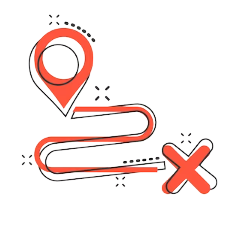
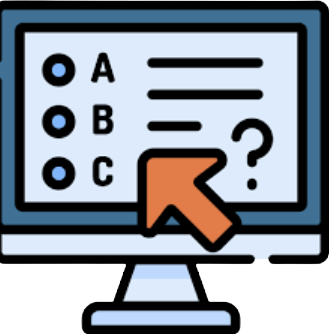

-

Guided path
Guided path is very important for the upsc aspirant. These study plan is made by experts and experience faculty.
Read more -
STUDY THE EXAM PATTERN AND SYLLABUS
Exam pattern and syllabus helps you to get the idea about what to study and how long time it will take to clear the exam.
Read more -

READ THE STANDARD BOOKS ALONG WITH NEWSPAPERS
Standard books are suggested by the topper and the experts. These books are easy to understand and cover all the topics. so we don't have to search for other books.Newspaper are very imporart for current affairs. even some of mcq question in prelims were asked directly from the books and newspapers.
Read more -
START THE ANSWER WRITTING PRACTISE
Answer writting is very important to get the more marks in the mains exams.Answer should be proper formate and cover all the questions.
Read more -

GIVE MOCK TEST FOR PRILEMS AND MAINS
Mock test are very important to understand whather we are preparing in right way or not. it helps to know the missed out topics. More the mock test more the concept will clear.
Read more